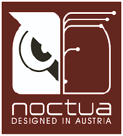
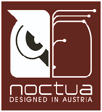

About
My name's James Morris and I'm from Southend on Sea, Essex. I'm a recently graduated Msc Computer Science student from the University of Kent, and have just completed a one year internship at the digital learning company Saffron Interactive — as a FRONT-END DEVELOPER and IT TECHNICIAN.
Over the past year I’ve gained experience of working on live client projects and have worked collaboratively amongst teams using agile workflows. I have a solid basic knowledge of Javascript, I’ve developed components in React (class based and modern React with hooks) and have knowledge of RESTful APIs. I’ve also developed a keen eye for UI, UX and responsive design.
Experience
Over the past year I've developed my skills in native JS, ES6 standards, React version control (SVN), end to end testing (Cypress), jQuery, JSON and XML.
I've also developed skills in management of domains in Windows AD, Windows and Linux server maintenance, bash, cmd, Powershell, and deployment and maintenance of AWS applications.
Education
I hold a Bsc in Forensic Biology (2:1) and a Msc in Computer Science (Merit).
Motivation
My desire to work within the computing industry first stemmed from the moment I learnt how to build my first PC. Examples of my built systems can be seen in the custom SFF section below.
My fine attention to detail can be seen in the desktops I produce, and this is the same level of focus and creativity I bring when working on projects. Examples of websites and apps I've developed can be seen in projects.
Hobbies
In my spare time I build PCs for friends and family - I'm currently hooked on small form factor (SFF) PCs (see section below). I've also been known to pick up a guitar and carry out some sing song writing when the mood strikes.
Seeking
I'm actively seeking new employment. I'm interested in front end developer positions within London or 20 miles of Essex.
I'd like to further build upon the skills I've developed over the past year, if you're a recruiter/employer and have information on a suitable job vacancy/graduate scheme please get in touch.
Always improving.
I've built up a variety of skills (over the internship and in my personal time). I'm always striving for further self development.
Projects
Todo app, users can add new tasks, tick off, delete and undo delete. On completion of all tasks a confetti animation is trigerred. The background of the app is also random on each page refresh.
Allowed me to practice native React, function components, React Bootstrap grid and components, React confetti library, local storage principles.
Kolink Rocket v4
Completed in 2019, this is my eighth desktop build to date. It was my first M-ITX, and involved custom modifications drafted in the 3D modelling tool Blender.
- Kolink Rocket case M-ITX case
- Aorus B450 Pro Wifi ITX
- AMD Ryzen 5 3600
- Asetek 645LT 92mm AIO
- 16gb Vulcan T-Force 3000mhz ddr4 RAM
- Nvidia Geforce 1080ti FE
- 1.5tb Silicon Power NVME m2 SSD
- Corsair SF600 PSU (with included sleeved cables)
- 1 x 92mm, 2 x 120m BeQuiet fans, Deepcool 4 hub fan controller
Custom handles
At 12.5 x 32.5 x 32.8cm, 9.6 litre volume (shoebox size) and 5kg - this case is travel ready. The added handles increase portability and make it easier for those who travel and need their SFF to accompany them.
Holes drilled through top panel with a drill press, brushed stainless steel 10cm D handles attached ~ 1 inch from the edges of the case.
Custom legs
Legs and tinted acrylic plexi side panels added to hide the exhaust fans, improve breathability of the case and provide a more stealth look.
2mm thick aluminium square tubing (4cm x 2cm x 2cm), 18 x 18mm square plastic ends inserted at both ends, drilled on top and bolted through underside panel of case.
3mm grey tinted Acrylic plexi (3mm rounded corners) cut to sizes: 2 x (27.5cm x 3cm), 1 x (9cm x 3cm). Attached with 3M double coated tape.

Custom fans
Exhaust options were limited in the original design so 80mm holes were added to the underside of the case to accomodate two 80mm BeQuiet! Pure wings fans.
The fan exhausts were cut using a 80mm Draper holesaw and a further hole for cable management was cut using a coping saw.

Solid construction
The titanium-grey anodised aluminium panels and minimalist design give the case a premium feel and look. The 2mm thick panels ensure your case can handle the day to day wear and tear it may encounter. Perforated holes each side mean the CPU and GPU can constantly take in cool air.

Sandwich style layout
This smart and optimised layout is the most efficient use of space and allows the case to support up to 31cm dual slot GPUS, mini-ITX motherboards, SFX/SFX-L PSUs and 2 x 2.5" SSDs

 
